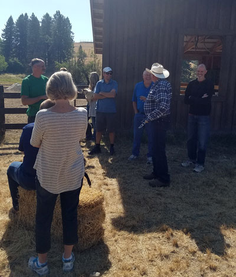
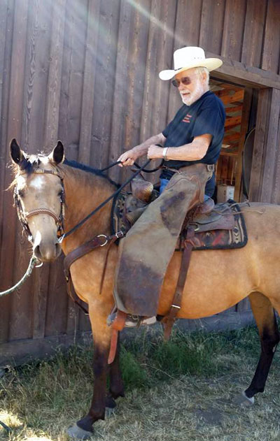
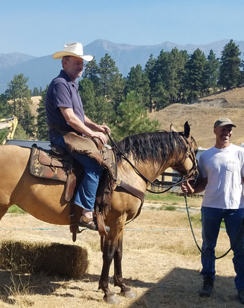
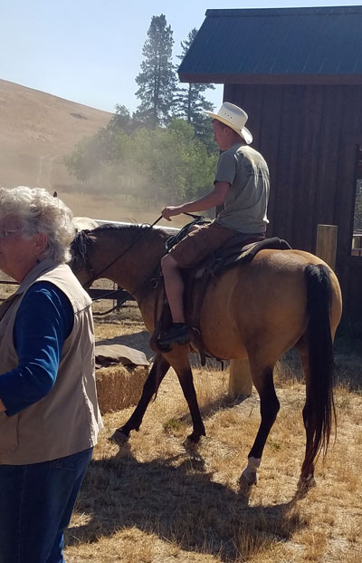
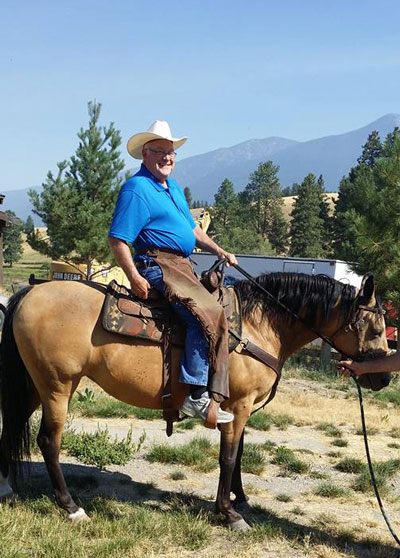
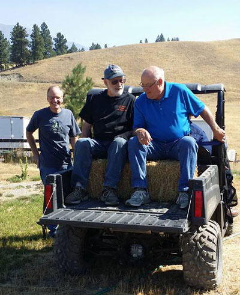
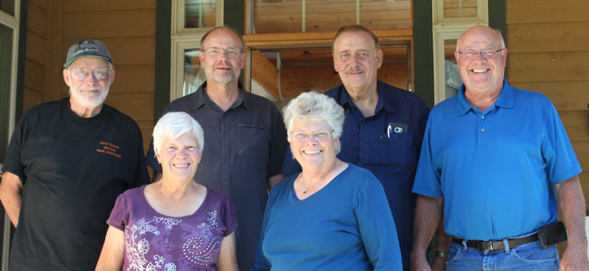
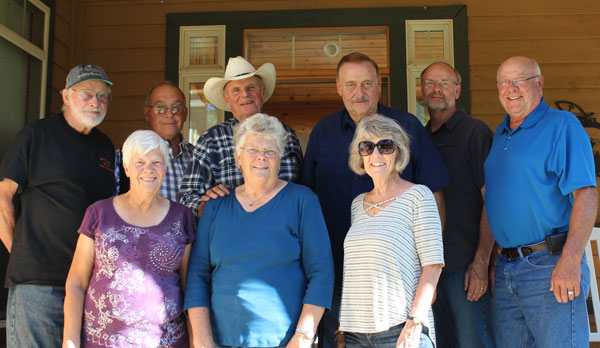
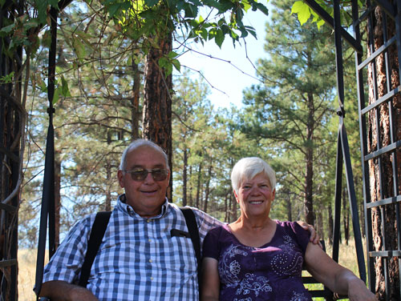
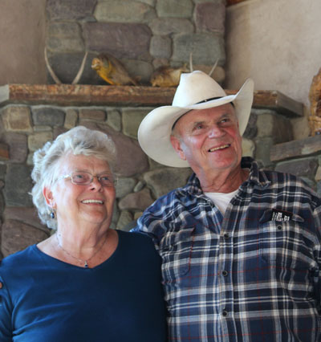

August 2017
| Eric's mother Rose has a large family, and they
rarely get together as a group, so it was a treat when most of them came
to Eureka for a weekend visit. This was our first time to meet some
of them and we were happy to get to know these aunts and
uncles. |
|
 |
 |
| The first event was a breakfast at Dan & Tracie's house.
Here we are joking around near the horses after breakfast. |
Ruben was the comedian of the family, he started a trend of riding Fancy the horse in full cowboy regalia. |
 Youngest brother Ronald saddled up |
 |
| Rebecca's boyfriend Matt hits the trail | |
 |
 |
| Larry complaining about the small waistband on the chaps | Jeb & Larry treat the family to a very memorable all-terrain ride |
 |
 |
| The Berget siblings - minus Charlie and Corinne | The family with spouses added (where available) |
 Dick & Mary Ann |
 |
| Rose & Dan | |